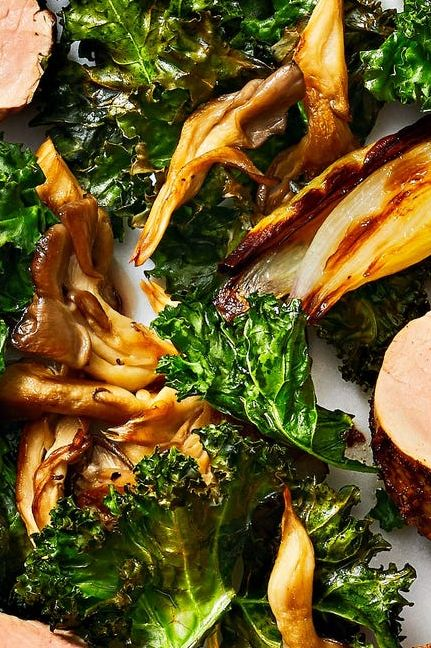

Home
Roasted Kale and Mushrooms

Description
Combine noodles, fresh tomatoes and water, then simmer for perfectly cooked pasta and a luxurious sauce all in one pot.
Ingredients
- 4 small shallots (about 3 oz. total), peeled and halved
- 6 tbsp. olive oil, divided
- Salt and pepper
- 6 oz. oyster mushrooms, trimmed, torn into bite-size pieces
- 1 large bunch green curly kale (12 oz. to 1 lb.), ribs removed, leaves torn into large pieces
Steps
-
Heat oven to 425°F. On rimmed baking sheet, toss shallots with 1 tablespoon oil and a pinch each of salt and pepper. Roast 5 minutes.
-
Meanwhile, in large bowl, toss mushrooms and kale with remaining 5 tablespoons oil and 1/2 teaspoon each salt and pepper until evenly coated. Add to shallots in pan and continue roasting, stirring once, until kale is crisp and lightly browned on edges and mushrooms and shallots are just tender, 15 to 20 minutes longer.